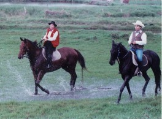

|
以上這些活動的提供者主要是林家馬場，林家馬場於民國七十七年成立，原為濱海騎馬俱樂部。成立初期以招收騎乘會員及馬匹寄養為主，成立時恰巧與國內賽馬風同步，因而在中部地區形成一般騎馬炫風，在當時曾造成轟動。當時俱樂部更時常舉辦許多活動，如馬術攝影等，在同業中是相當成功的。但因產業的遷移大陸、馬匹價格的高漲等不利原因，轉為一多元化觀光農場，以「白馬休閒酒莊」延續林家馬場的精神，展開另一行程，結合休閒、養生、美食，而有養生酒的開發、製造及鹹蛋diy製作…等。
目前馬場中只剩三匹馬‥才一歲半的「Peter」、懷孕六個月的「小仙女」，以及一匹純種的阿拉伯馬。隨著彰濱工業區的開發，愛馬成痴的林老闆說現在只有辦活動及預約，才會載馬到肉粽角一帶馳騁、奔騎。林老闆娘說：「產業與休閒的結合，休閒與地方的結合一直是我們的目標」，若是您想騎馬、看馬、鹹蛋DIY、品酒…，別忘了事先預約到林家馬場一遊喔！ |
|
 |
| 熱愛馬匹的林家夫婦騎馬奔馳 |
|